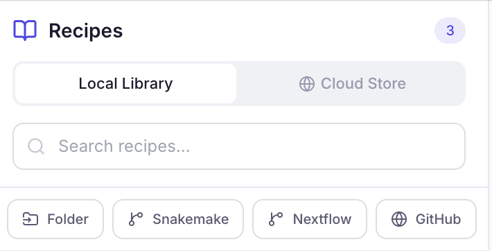
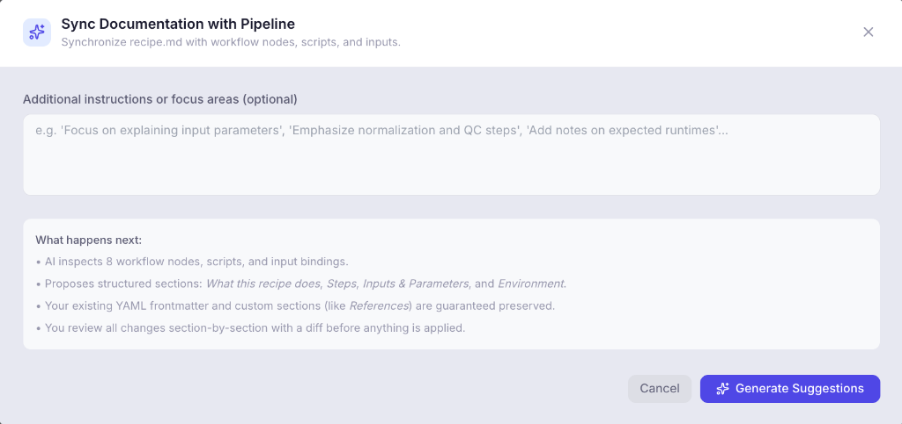
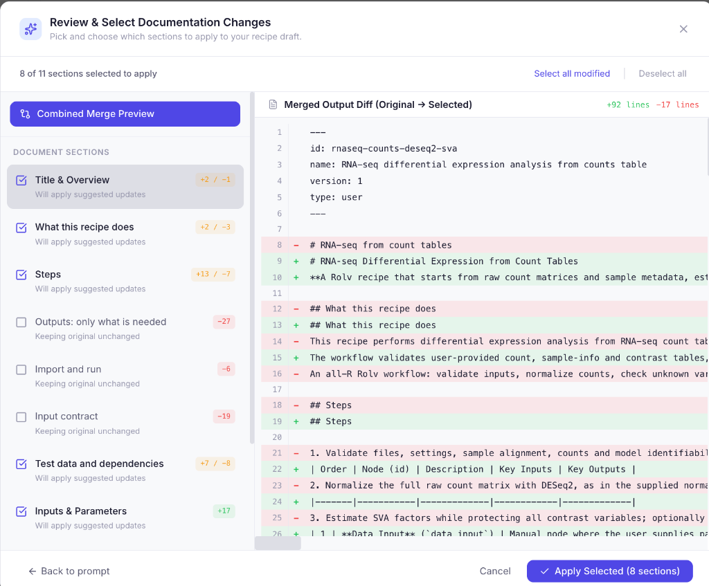

The Recommended Recipe Creation Workflow
The ideal, best-practice way to build robust recipes in rolv follows a two-stage workflow:

- Build & Validate in Graph View:
- Create a visual pipeline in Graph View. Add nodes, write/generate code, set up inputs/outputs, and execute the nodes.
- Test execution locally or over SSH. Enable Auto-Correct Failures and Strict Fact-Checking in Graph Actions to verify your pipeline runs end-to-end without errors.
- Export as Recipe:
- Open Graph Actions (top-right slider icon) and click Save as Recipe.
- This packages your graph structure, scripts, environment specs, and parameters into a clean recipe bundle.
- Refine in Recipe Designer:
- Open your new recipe in the Recipe Designer (
Recipes → Open Designer). - Polish
recipe.mddocumentation, click Enhance on node descriptions for vector RAG search, configureenv/files, and add troubleshooting hints.
- Open your new recipe in the Recipe Designer (
- Submit to Cloud Library:
- Click Submit in the designer header to publish your recipe for peer review.
Recipe Library & Cloud Library

Click Recipes in the sidebar to open the Recipe Library. Local recipes load instantly from your machine, while any available cloud updates or new versions check silently in the background. Use the tab toggle at the top:
- Local Library: Browse, run, edit, duplicate, export, or delete recipes saved on your local machine.
- Cloud Library: Search the online community repository for verified pipelines and sub-node blueprints. Signed-in Free users can browse names; downloading requires Academic or Pro. A Cloud Library hit that is not on disk yet is downloaded on first use (chat Use Recipe, library Run Recipe, or saying “run it” in chat).
Recipe Download Slot Limits
- Free Tier: Browse the Cloud Library. Downloading recipes is not included.
- Academic Tier (🎓): Includes 5 active local recipe slots. Downloading a recipe from the Cloud Library consumes 1 slot.
- Publish-to-Earn Rewards (Academic): When your submitted community recipe is approved by maintainers/admins, you earn +5,000 Compute Credits, +2 Permanent Recipe Workspace Slots, and Maintainer Status to review and approve community updates!
- Pro & Team Tiers: Unlimited recipe workspace slots.
Recipe Properties
Types
| Type | Description |
|---|---|
| User | Created by you |
| Team | Shared within your organization |
| Validated | Reviewed and approved |
Statuses
| Status | Meaning |
|---|---|
| Draft | Work in progress |
| Saved | Saved locally |
| Submitted | Submitted to the cloud for review |
| Approved | Accepted by a reviewer |
Categories (Cloud)
| Category | Meaning |
|---|---|
| Core | Maintained by the rolv core team |
| Community | Contributed by other users — use at your own discretion |
Running a Recipe
From the library
- Select a recipe in the library
- Click Run Recipe
- Choose a working directory
- The recipe is instantiated as a new graph session with all nodes and code pre-loaded. Data Input/Output come back as I/O nodes (not compute) when the recipe was saved with
node_type. Fill input variable paths on the Data Input node, then run.
From chat
| You do this | What happens |
|---|---|
| Click Use Recipe on a card the agent showed | Same as Run Recipe: a new graph session |
| Type the recipe name, “run it”, “yes”, or “do 2” | Loads the recipe into the current session (replaces the current graph) |
Recipes saved from Graph before I/O round-trip may still show Data Input as a compute node. Re-open the original graph and Save as Recipe again.
Linked cloud recipes show a Cloud vN badge. Local-only recipes show Local only. Unsaved edits on a cloud-linked recipe show Local changes not submitted.
Importing Pipelines
The recipe browser can import a local folder, a Snakemake pipeline, or a GitHub repository.
| Source | How it works |
|---|---|
| Folder | Accepts a Rolv recipe folder, a Snakemake pipeline, or a folder of scripts. A Rolv recipe imports as-is. A folder of scripts is compiled into a pipeline. |
| Snakemake | Select a Snakefile or pipeline folder. This rewrite uses many tokens and is not failsafe: a pipeline that cannot be adapted is rejected. |
| GitHub | Paste a public repository URL. Accepted repositories are a Rolv recipe, a folder of scripts, or a Snakemake pipeline. A Snakemake repository uses the same rewrite as the Snakemake button, so it spends many tokens and is not failsafe. |
During import, a live status chip in the interface tracks scanning, script extraction, DAG construction, and validation in real time.
Recipe Designer
Click Open Designer on any recipe to enter the full editor. It has four tabs:
Recipe Tab
Edit the recipe.md file — the human-readable documentation for your pipeline. Toggle between Edit and Preview modes.
Syncing Documentation with Your Pipeline
As your pipeline evolves—when you add nodes, change parameters, or rewrite scripts—your documentation can quickly become outdated. The Sync docs with pipeline button uses AI to read your entire workflow graph, scripts, inputs, and outputs, then proposes updated documentation.
- Open the Sync Modal: Click Sync docs with pipeline in the
recipe.mdeditor header. - Provide Optional Instructions: You can add specific focus areas, such as "Focus on explaining input parameters" or "Add notes on expected runtimes", or leave it blank for a complete overview.

- Review Changes Section by Section: Rolv compares your current documentation with the generated draft and displays an interactive diff:
- Section Checklist: Browse detected sections (such as Title & Overview, What this recipe does, Steps, Inputs & Parameters). Check the boxes for updates you want to apply, and uncheck any you prefer to keep unchanged.
- Visual Diff: The right pane highlights additions in green and removals in red so you know exactly what is changing.
- Safe Metadata: Your existing YAML frontmatter header (name, id, version, type) and custom sections (like References) are guaranteed preserved.
- Apply Selected Changes: Click Apply Selected to update your
recipe.mddraft. You can continue editing manually before saving.

Workflow Tab
Visual graph editor showing nodes and edges. Click a node to see and edit:
Compute / research nodes
- Label and Kind (
script= compute,agent= research,manual= reserved) - Touch-last / protected — AI auto-heal prefers other nodes first. Optional reason is stored and sent to the model.
- Research mode (research /
agentonly) — Interpret / simple agent (files and figures, no web search), Literature review (search only), or Full (both) - Structured output (research /
agentonly) — optional. Tick this when the next compute node must read a table. Enter comma-separated field names or leave blank for automatic schema inference. - Batch iteration across items (ForEach) (research /
agentonly) — optional. Automatically loops across up to 100 items/rows in parallel with live progress and produces aggregated Markdown and JSON results (<slug>-results.json,<slug>-report.md). - Expects and Produces (input/output data contracts)
- Description — Used for semantic search; click Enhance to auto-generate a dense description using AI
- Code file — The template code associated with this node
Data Input / Data Output
- Canvas uses the same purple/green I/O chrome as Graph View
- Right pane is an I/O panel (no Kind, Core, or code editor)
- Data Input: names, descriptions, and defaults of inputs. A local file path is cleared. Plus an optional test-data script. The script creates sample files and a
test_input.json. Generating test data copies those values intoinput.json. See Test data in Graph View. - Data Output: ledger only; artifacts come from
output.jsonafter a run
Environment Tab
Edit environment files under env/ and troubleshooting.md. Typical files:
| File | Purpose |
|---|---|
python-requirements.txt |
Python packages (conda-forge / pip-style names) |
r-packages.txt |
R / Bioconda packages |
system-tools.txt |
CLI tools installed via Mamba |
Automatic Python Package Resolution
When running or saving pipelines, Rolv automatically maps Python import statements to their real package names (such as mapping cv2 to opencv-python and sklearn to scikit-learn). If a package is not found in Conda or Bioconda, Rolv automatically attempts to install it via pip, both for local runs and across remote SSH servers.
The troubleshooting file can be auto-refreshed from the source session's execution history. Save as Recipe from Graph fills the env files with versions where known, automatically resolves Bioconductor and CRAN packages with canonical version constraints, and omits Python stdlib / R base packages.
Changes Tab
A diff viewer showing what's changed since the last save.
Publishing to Cloud
- Click Submit in the designer header
- Your recipe is uploaded for review
- Once approved, it becomes available to other users
- Submit again on a recipe that is already on the Cloud Library updates that listing (it does not create a duplicate). If the cloud copy is gone, Rolv creates a new listing.
Cloud Sync & Updates
When a cloud recipe has a newer version available, you'll see an "Update Available" badge:
| Action | What it does |
|---|---|
| Keep My Version | Accept the new version number without changing your local files |
| Snooze 7 days | Hide the update reminder for a week |
| Smart Merge | AI merges the cloud changes with your local edits (creates a restore point first) |
| Clean Overwrite | Replaces your local recipe entirely with the cloud version (creates a restore point first) |
Note: Clean Overwrite requires Academic or Pro. Smart Merge requires a Pro subscription.
Recipe Sharing
When AI modifies a cloud-origin recipe locally, rolv can share improvements back. Configure this in Settings:
- Ask every time — Prompts you after each save
- Never ask — Silently skips sharing
- Auto broadcast — Automatically submits contributions
Reporting a Recipe
For cloud-sourced recipes, click ⋮ → Report this recipe to flag content that's harmful, misleading, or violates guidelines.
Next: Reviews →